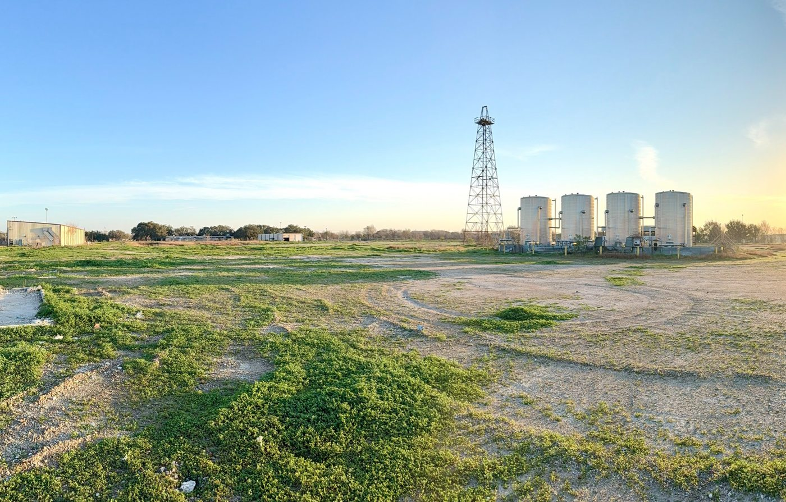
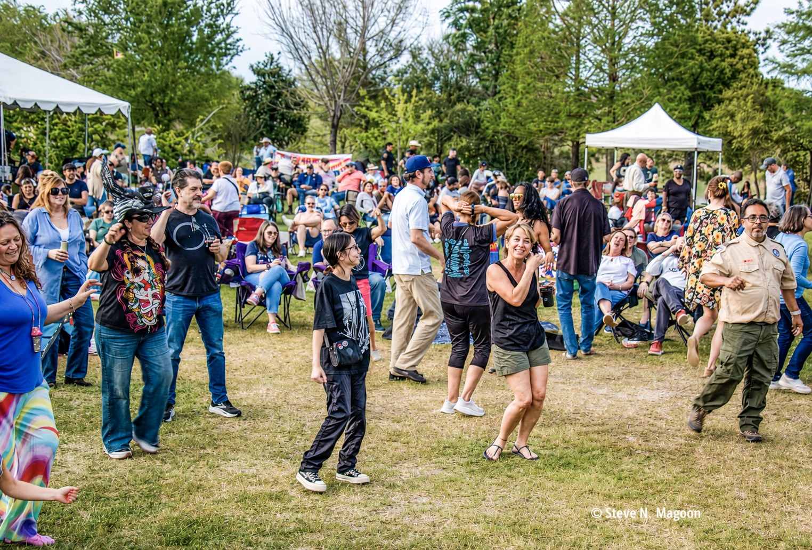

Levitt Pavilion Houston will create a permanent home for free live music beside the 291-acre Willow Waterhole Greenway. Each year, the pavilion will welcome Houston to 40 free professional concerts in an open-air setting designed for music, gathering, and community.
Free professional concerts will welcome families, friends, and neighbors from across Houston to experience live music together.
The historic steel derrick will preserve the former Shell Gasmer site’s energy history while marking a new future for music and community.
The pavilion will create a welcoming new entrance and gathering place connecting live music, nature, and the broader Greenway experience.
A permanent public stage will create new opportunities for local students, emerging artists, cultural groups, and community performers.
Levitt Pavilion Houston is planned for the former Shell Gasmer site beside Willow Waterhole Greenway.
Once part of Houston’s energy story, the site will become an open and welcoming destination for concerts, community events, and everyday gathering. The historic steel derrick will remain as a visible connection between the site’s past and its future.

The former Shell Gasmer site at sunrise.
Help create a permanent home where Houston’s energy story, free live music, and community come together for generations.

MusicFest at Willow Waterhole. Photo: © Steve N. Magoon.
MusicFest has brought free live music to Willow Waterhole since 2012. The Spring 2026 event continued that tradition, drawing student musicians, professional artists, families, and neighbors to the lawn for a shared day of music and community.
The enthusiastic turnout reflects Southwest Houston’s appetite for free live music. Levitt Pavilion Houston will build on that tradition with a permanent home for future concerts, community performances, and MusicFest events.
“When I learned the Levitt Foundation had chosen Willow Waterhole Greenway as the Houston location, my energy was off the charts. I could barely sit still.” Howard Sacks, Chair, Levitt Pavilion Houston
The Levitt Foundation has helped set the project in motion. Community support is needed to build the pavilion and bring free live music to Southwest Houston for generations.
Every gift moves us closer to opening night.